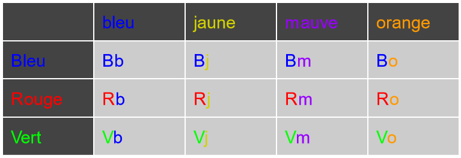

Commençons immédiatement avec le théorème le plus important en combinatoire, le principe de multiplicité, (aussi appelé la règle de multiplication).
Règle de multiplication: si une tâche T1 peut être effectuée de n1 manières distinctes et qu'une tâche T2 peut être effectuée de n2 manières distinctes, alors il y a n1 × n2 manières d'effectuer T1 ET T2.
Pour digérer le tout, voici un exemple qui servira aussi de preuve très informelle (pour rendre le théorème intuitif).
Pour illustrer cette règle, prenons l'exemple de Bob qui doit choisir un short et un chandail pour s'habiller. Il possède 3 shorts (bleu, rouge et vert, respectivement) et 4 chandails (bleu, jaune, mauve, orange). De combien de manières peut-il s'habiller?
Solution intuitive
Avec chaque pantalon, il peut mettre n'importe quel des quatre chandails. Il est donc naturel de mettre toutes les possibilités d'habillage dans un tableau en deux dimensions.

La rangée indique quel pantalon est choisi, tandis que la colonne indique quel chandail est choisi. Pour chaque case du tableau, (excluant les bordures en haut et à gauche), on a un habillage différent. Le nombre de manières de s'habiller correspond donc au nombre de cases dans le tableau. Le nombre de cases d'un tableau est toujours égal au produit de son nombre de rangées et de son nombre de colonnes, donc le nombre de manières de s'habiller est: #pantalons × #chandails = 3 × 4 = 12.
Ceci étant dit, on ne pourrait pas parcourir tout ce tutoriel avec des dessins, car le nombre de dimensions est rarement de seulement 2, alors voici comment utiliser le théorème de multiplicité:
Solution
Tâche 1: choisir un pantalon (3 choix)
Tâche 2: choisir un chandail (4 choix)
Le nombre de manières de choisir un pantalon et un chandail est donc 3 × 4 = 12.
Comme expliqué plus tôt, les dessins (tableaux) sont intuitifs, mais à portée limitée. Si Bob a en plus des casquettes, des bas et des boucles d'oreilles, il a 5 tâches à faire (5 objets vestimentaires à sélectionner). On ne peut pas dessiner un prisme en 5 dimensions! Il faut donc utiliser le principe de multiplicité. Cependant, il est avant tout nécessaire de généraliser le principe de multiplicité à plus de 2 tâches.
Règle de multiplication (généralisée): si des tâches T1, T2 ... Tk peuvent être effectuées de n1, n2 ... nk manières respectivement, alors il y a n1 × n2 ... × nk manières d'effectuer l'ensemble des tâches.
Voici un exemple un peu plus complexe d'utilisation de la règle de multiplication.
À Gotham State, les numéros de plaque d'immatriculation des voitures doivent respecter un certain format. Ce sont des numéros à six caractères, chaque caractère étant un chiffre ou une lettre majuscule (un peu comme la plupart des numéros d'immatriculation au Québec). Cependant, à Gotham State, le premier caractère doit absolument être une lettre, tandis que les deux derniers caractères doivent absolument être des chiffres. Les trois autres caractères peuvent être l'un ou l'autre.
Par exemple, A6B375 et EEHK00 seraient des numéros valides, mais pas P33KB56, 7AHB88 et K7UWL9.
Combien de numéros d'immatriculation valides peut-on produire à Gotham State?
Solution
Rappelons-nous qu'il existe 10 chiffres (de 0 à 9) et 26 lettres. Lorsque vient le temps de choisir un caractère, on a donc 10 choix s'il est obligatoire de choisir un chiffre, 26 choix s'il est obligatoire de choisir une lettre et 36 choix si on peut choisir un chiffre ou une lettre.
Il y a 6 tâches à faire, chacune correspondant à choisir le caractère d'un des six emplacements. On a:
26 choix pour le premier caractère
36 choix pour le deuxième caractère
36 choix pour le troisième caractère
36 choix pour le quatrième caractère
10 choix pour le cinquième caractère
10 choix pour le sixième caractère
On peut donc produire 26 × 36 × 36 × 36 × 10 × 10 = 121 305 600 différents numéros de plaque.
On voit ici l'une des applications de la combinatoire. Avant qu'une région ne décide quel sera le format de ses numéros d'immatriculation, il est important qu'elle s'assure que le format permet suffisamment de numéros de plaque distincts pour en fournir à toutes les voitures immatriculées dans une région, et cela pendant un assez grand nombre d'années.
Le même principe s'applique aux numéros de téléphone. Le numéro à 7 chiffres (***-****) permet seulement 10 × 10 × .... × 10 = 10^7 = 10 000 000 possibilités. Ce nombre est évidemment insuffisant pour couvrir l'Amérique du Nord au complet et c'est pour cela que trois chiffres ont été ajoutés à gauche, à titre d'indicatif régional (l'indicatif de Montréal est 514). Malheureusement, Montréal a à elle seule a dépassé le besoin des 10M de numéros et l'indicatif régional 438 a donc aussi été attribué à Montréal en renfort. Plus récemment, même les numéros disponibles d'indicatif 438 ont commencé à se raréfier, alors un autre indicatif (263) commence à être utilisé à Montréal.
Sur ordinateur, les couleurs sont en général représentées sous la forme de trois nombres, plus précisément sous forme RGB (niveau de rouge, niveau de vert, niveau de bleu). Chaque composante peut prendre une valeur entière entre 0 et 255 inclusivement. Par exemple:
(0,255,0) est la couleur verte
(0,0,255) est la couleur bleue
(255,255,0) est la couleur jaune (car le jaune est une combinaison de rouge et de vert)
(165,42,42) est une teinte de brun
(0,0,0) est la couleur noire
(255,255,255) est la couleur blanche
Les différentes teintes de gris sont de forme (v,v,v), donc ayant la même valeur pour chaque composante
Combien de couleurs différentes peut-on former?
Réponse encryptée: 043c11d1f6303cf0006426567c6879a038945321
Combien de teintes de gris peut-on former?
Réponse encryptée: dd7c1a3d9d5627da9aea5415e3d07202bfb5925e
La compagnie ChelouPrivacy exige que chacun de ses clients se crée un mot de passe. Pour ce site web, un mot de passe doit être d'exactement 5 caractères et posséder uniquement des caractères alphanumériques (chiffres, lettres minuscules et lettres majuscules).
Combien de mots de passe peut-on former?
Réponse encryptée: 528a6e5a031262efd8c2c049979db3ce750ac6a9
Parmi ces mots de passe, combien n'ont ni lettre majuscule ni deux fois le même caractère?
Réponse encryptée: 7293dc4616592b602ff3962ad8ca83289612f9eb
Vous avez sûrement remarqué que les mots de passe sont, dans la vraie vie, plus longs que la limite fixée par ChelouPrivacy et peuvent utiliser une plus grande variété de caractères. En effet, la seule raison pour avoir conçu un tel exemple et que pour la réponse exacte puisse être contenue entièrement dans le petit écran de votre calculatrice. En réalité, si le nombre de possibilités pour les mots de passe ne déborde pas l'écran à 9 cases de votre calculatrice, ce n'est pas très sécuritaire...
Gotham State (voir le contexte plus haut sur cette page) a décidé qu'en plus des règles déjà décidées plus haut, une nouvelle règle s'ajoute pour ses plaques d'immatriculation: aucun caractère ne doit se répéter. Par exemple, A78A92 ne serait plus valide, car il y a deux "A".
Combien de numéros de plaque différents peuvent être créés, étant donné cette nouvelle contrainte?
Réponse encryptée: 2043280024b63fa7da52a85fae0475461e854631